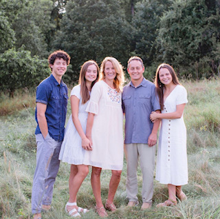
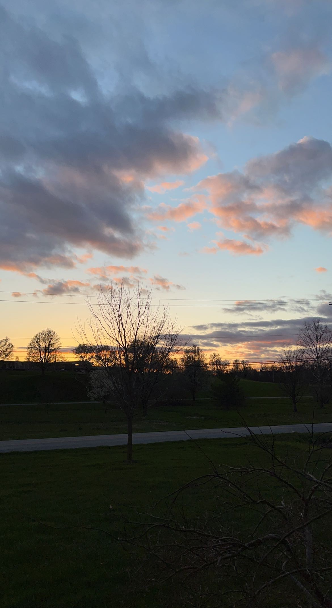
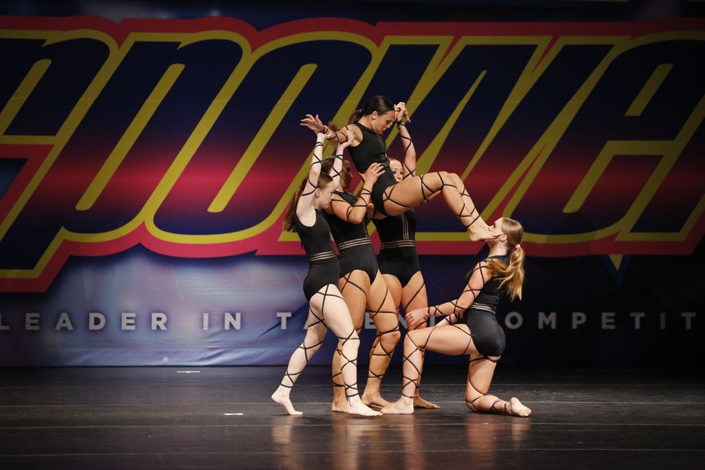

Hi! My name is Izzy Brown and I am happy you made it to my website! Currently, I am a student at BYU, so my days are filled with studying and more studying. When I am not doing homework, I love spending time with my family and friends and being outdoors. I am the middle child of two siblings who are a lot to handle. Here is a picture of my family and I!

I am from Lancaster, Pennsylvania which is a big agriculture county. Because of this, I have a lot of gratitude for our earth and the beauty it holds. I love sitting on my patio and watching the sunset because Lancaster has amazing sunsets with the farm fields. This is one of my most recent pictures of a Lancaster sunset!

Also, one of my favorite things to do is dance. From age 8-18 I was on a competition team. Practices were everyday for 4 hours and then we would have competitions on the weekends in spring. I loved my team and having the ability to express myself through creative movement. Here is a picture of me dancing!
